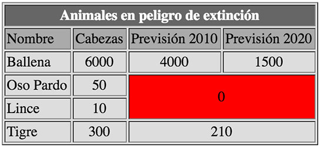

Práctica 3: Introducción a la presentación en pantalla con CSS
Al crear una página web, se utiliza en primer lugar el lenguaje HTML/XHTML para marcar los contenidos, es decir, para designar la función de cada elemento dentro de la página: párrafo, titular, texto destacado, tabla, lista de elementos, etc.
Una vez creados los contenidos, se utiliza el lenguaje CSS para definir el aspecto de cada elemento: color, tamaño y tipo de letra del texto, separación horizontal y vertical entre elementos, posición de cada elemento dentro de la página, etc.
Internamente los navegadores están divididos en varios componentes. La parte del navegador que se encarga de interpretar el código HTML y CSS para mostrar las páginas se denomina motor. Desde el punto de vista del diseñador CSS, la versión de un motor es mucho más importante que la versión del propio navegador.
Todos los elementos HTML incluyen márgenes por defecto. Aunque los navegadores web actuales tienen una calidad muy superior a los antiguos, conviene saber que cada motores de restitución empleado por los navegadores aplica sus propias reglas para mostrar los elementos en pantalla. En teoría esto quiere decir que el margen por defecto de 10 pixeles en un navegador X puede transformarse en 15 pixels en el navegador Y. Estas diferencias generan resultados no homogéneos a la hora de ver las páginas en distintos sistemas
Cuando se empezó con el diseño web a mediados de los 90, el único método que se podía emplear para crear estructuras visuales complejas, como por ejemplo la presentación en varias columnas, consistía en emplear el elemento tabla (table). La tabla HTML estaba pensada inicialmente para mostrar datos de manera estructurada, en filas, columnas y celdas.

Antes de la estructura visual de nuestras páginas web tenemos que decidir unas cuantas cosas. Lo primero es qué anchura va a tener. Hay dos categorías principales de estructuras en base a su anchura: las de anchura fija y las de ancho variable. En las estructuras de ancho fijo todos los elementos de la página se anidan dentro de un contenedor que tiene un ancho explícito. La anchura fija es una solución muy cómoda para el diseñador ya que permite ubicar con precisión los distintos elementos (cabeceras, barras laterales y pies de página). Además aporta un esqueleto robusto para otros elementos, como la anchura de párrafo o el posicionamiento de imágenes cuando éstas aparecen en gran número (por ejemplo en sitios web de catálogos de producto).
Esta página emplea una serie de elementos div para generar su estructura de base. Podemos considerar al elemento div como un contenedor genérico en el que podemos poner elementos relacionados entre sí de forma lógica. La apertura y cierre de etiquetas div suele hacerse rodeando a otros elementos de la página, de forma que dichos elementos quedan anidados dentro del contenedor. Puedes tener en la misma página todos los elementos div que consideres necesarios y con frecuencia se utilizan para crear el armazón visual. Un elemento div suele llevar un atributo ID (con lo que adquiere un “nombre” explícito dentro de la página) o bien pertenecer a una clase CSS, utilizándose ambos como medio para aplicar al contenedor uno o más estilos CSS. El empleo de elementos div facilita a otras personas la identificación de las diversas secciones en que se subdivide la página y también nos ayuda a controlar y aplicar estilos en cada una de ellas.
La propiedad float en CSS hace posible que un texto pueda escribirse alrededor de una imagen. Este estilo ha sido tomado del diseño de imprenta, donde a este efecto se le llama “justificación” del texto. CSS consigue el mismo efecto haciendo que los elementos que siguen a un elemento “flotante” puedan rodearlo, cambiando su posición relativa con respecto a él. Este comportamiento también nos sirve para crear columnas en una página.
El valor float se puede también declarar como “left”. En el ejemplo anterior, la imagen pasaría al lado izquierdo del div contenedor, y el texto se empezaría llenando el lado derecho restante.
Los únicos valores posibles para float son “left”, “right” y “none”. No se puede centrar un objeto utilizando esta propiedad.
Si queremos tener múltiples elementos flotantes dentro del mismo contenedor, el resultado es que se alinean entre sí. Este comportamiento se suele utilizar en ciertas funciones habituales de las páginas web, como por ejemplo los menús horizontales o las galerías de imágenes.
En esta lección hemos visto dos métodos para separar los elementos dentro de una página. El primero consiste en añadir margen interno (padding) al elemento div contenedor. En este caso la ventaja es que todos los elementos dentro de este div se ven afectados al mismo tiempo, es una solución rápida y eficiente. Su desventaja es que aumenta la anchura total del propio contenedor. Para compensar esta expansión, tenemos que dejar algo de espacio adicional a los lados. Este comportamiento puede generar cierta confusión y provocar que las páginas se restituyan incorrectamente si no tenemos cuidado.
El segundo método consiste en añadir márgenes externos a los elementos que están dentro del propio div. Su desventaja es que necesitamos más código y hay que prestar atención a los detalles, tenemos que ir viendo cómo se posicionan los elementos individualmente. Su ventaja es que el posicionamiento de la columna es más predecible, puesto que solo tenemos que tener en cuenta una anchura total.
Finalmente, conviene destacar que lo habitual es aplicar una combinación de ambos métodos en cualquier estructura de presentación. Por tanto, debes conocer bien el comportamiento y los efectos de cada uno de ellos.

Podemos aplicar colores de fondo y/o bordes a los elementos principales de nuestra estructura en las primeras fases del diseño, lo que nos ayudará a ver mejor sus límites. Después, si no queremos conservarlos, podemos eliminarlos y la estructura seguirá funcionando sin problemas. Ahora vamos a eliminar los colores de fondo de los divs del centro de la página, añadiremos algunas imágenes de fondo y mejoraremos algo el estilo de nuestra barra de navegación.
La declaración text-decoration elimina el subrayado del vínculo y le cambia el color a blanco. La declaración display:block hace que estos elementos de navegación llenen por complete todo el espacio de la barra de navegación
¿Que es un CSS?
El CSS (hojas de estilo en cascada) es un lenguaje que define la apariencia de un documento escrito en un lenguaje de marcado (por ejemplo, HTML).
¿Para que sirve un CSS?
Los elementos de la página web creados con HTML se les dará la apariencia que se desee utilizando CSS: colores, espacios entre elementos, tipos de letra, separando de esta forma la estructura de la presentación.
¿Cual es la diferencia que seria mas difícil de realizar en un sitio web si se optara por no usar un CSS?
La página web creada no sería llamativa y todos los elementos como imagenes, tablas, etc estarían esparcidos en lugares donde no se desearían.
Conclusiones
Edson Asael Corona EncinaEn esta lección se da un repaso a antiguos conceptos se dan a conocer nuevos que se aplican para realizar formatos de diferentes estilos de CSS, para acomodar elementos en una pagina web de forma dinamica y que se logre ver profesional, evitando espacios inecesarios entre elementos por ejemplo parrafos o imagenes, tambien se lee la forma en la que se pueden realizar tablas y fusionar celdas para diferentes tipos de contenido. Es importante también crear divisiones de las páginas web con margenes y elementos de padding para centralizar el texto o el contenido dentro de las etiquetas.